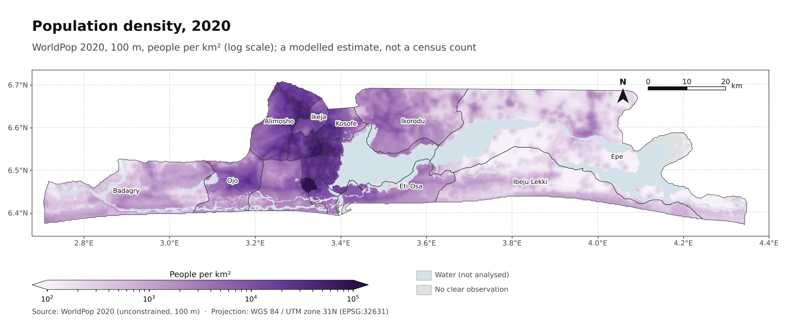
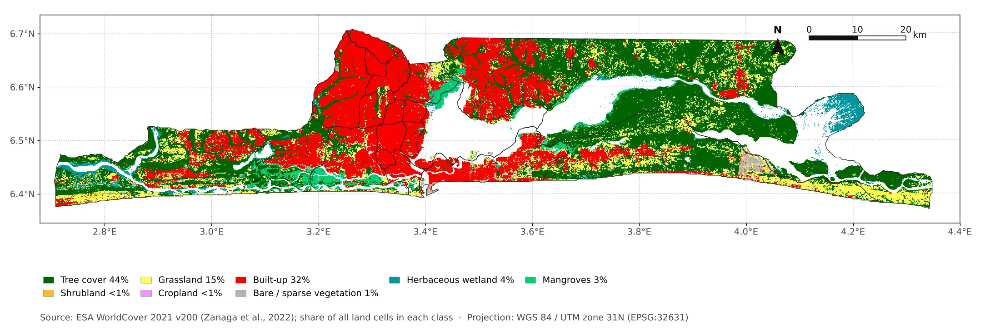

Urban heat island and distance to vegetation in Lagos State, Nigeria, 2020–2024
David OloyedeNovember 2026
Abstract
We ask whether residents of Lagos State who live far from vegetation also live on hotter ground. The heat measure is the urban heat island (UHI): how much warmer the land surface is than the surrounding countryside, taken from Landsat satellite images of the dry seasons of 2020–2024 at about 11:00 local time. About 13.9 million modelled residents live on land with a vegetation value. 65% of them live more than 300 m from vegetation, and 98% of those live on built-up cells. Among built-up cells, residents beyond 300 m are 1.4 °C warmer on average than residents within it, or 1.2 °C if vegetated cells are left out. The gap is positive in every check we ran. It ranges from 0.4 to 1.7 °C across the vegetation cut-offs, buffers of 0 to 120 m and population layers, and from 0.2 to 1.9 °C within single LGAs. Across all land-cover types the gap is 2.2 to 3.1 °C, depending on the population layer. These are cross-sectional associations. They do not show that vegetation lowers heat exposure.
Keywords: urban heat island; land surface temperature; Landsat; vegetation; Lagos; population exposure
1. Introduction
Cities are warmer than the land around them. The air-temperature version of this is largest on clear, calm nights (Oke, 1982). Satellite surface temperature measures the ground surface instead, and that is the quantity used here (Voogt & Oke, 2003).
Lagos State holds about 14.0 million modelled residents on its mapped land. Built-up land lies mainly west of the lagoon, and tree cover is concentrated in the east and along the water.
We ask two questions. How is the surface heat island spread across the population? And are residents far from vegetation on warmer built-up ground, or does the difference disappear once land cover is held fixed? A comparison across all cells mixes the two, so the main comparison is built-up cells with built-up cells. We do not analyse change over 2000–2025. Early images are few, and the switch from Landsat 7 to Landsat 8 changes the bands; a sensor offset estimated for the earlier study could not be resolved with the data available.
2. Data and methods
Study area. Lagos State covers 3,102 km² of mapped land on the Atlantic coast of south-west Nigeria, with 20 local government areas (LGAs).
2.1 Heat, vegetation, population and land cover
Surface temperature and vegetation come from Landsat 8 and 9 Collection 2 Level 2 images (USGS, Landsat Collection 2), accessed through Microsoft Planetary Computer, for dry-season images searched from December 2019 to March 2025; the images kept run from January 2020 to December 2024. We masked clouds, cloud shadow and pixels with a temperature uncertainty above 4 K, and resampled to a 60 m grid in UTM zone 31N. For each cell we took the median over the clear images, and a cell needs at least three to enter the heat analysis. Vegetation is the median normalised difference vegetation index (NDVI, a satellite greenness index), and a cell is vegetated when NDVI is at least 0.4; cut-offs of 0.3 and 0.5 are tested.
The UHI intensity of a cell on one image is its surface temperature minus the mean temperature of a countryside reference, and we map the median over images. The reference is land within 20 km of the state that WorldCover 2021 classes as tree cover, shrubland, grassland, cropland, wetland or mangrove (Zanaga et al., 2022). 31% of the reference cells lie inside the state.
Population is the WorldPop 2020 unconstrained product at 100 m (WorldPop, 2020; Tatem, 2017), a modelled estimate, summed onto the 60 m grid. As a check we also use WorldPop’s constrained product, which places people only on settlement cells. Land cover is ESA WorldCover 2021 at 10 m, sampled at the cell centre.
2.2 Image selection
We searched all Landsat 8 and 9 dry-season scenes from December 2019 to March 2025 with under 70% cloud, giving 173 passes (one satellite, one day, one path). A pass was kept if its reference had at least 6,750 clear 60 m pixels, no more than 5% of built-up 180 m blocks were more than 3 °C colder than the reference (a cloud and fog screen), and at least one LGA was half clear. 18 passes were kept. 80 failed on a cloudy reference, 62 had no LGA half clear, 11 failed the cold screen and 2 could not be read. All 18 kept passes are on Landsat path 191 at about 10:03 UTC (11:03 local time), from January 2020 to December 2024. The cold screen uses the heat values, so it is partly selection on the outcome. Section 3.3 tests this.
2.3 Distance and exposure measures
Distance to vegetation is the straight-line distance from a cell to the nearest vegetated cell. Residents are “within” if their cell is within 300 m (about 3.6 minutes on foot at 5 km/h) and “beyond” otherwise. The measure ignores roads, fences and access, and counts a single 60 m cell of street trees as vegetation.
A cell is hot when its UHI intensity is at least 4 °C. The hot share of a group is the population on hot cells divided by all residents of the group, so cells without a heat value count as not hot; 0.7% of residents have no heat value, so the shares are lower bounds by at most that much. Mean heat is population-weighted. About 10% of land cells have no vegetation or heat value, probably because of the cloud, shadow and uncertainty masks, and a further 2% have one or two images. The figures use only inputs without gaps (population and land cover). We report no confidence intervals from resampling cells, because neighbouring cells are not independent.
3. Results
3.1 Population and land cover
Across all land cells, built-up land covers 32% of the area and holds 84% of the population, and tree cover covers 44% and holds 9% (Figures 1 and 2). The median UHI intensity is 5.6 °C on built-up cells and −1.9 °C on tree-covered cells.


3.2 Distance to vegetation and heat
65% of residents live more than 300 m from vegetation. That moves from 47% to 77% when the NDVI cut-off moves from 0.3 to 0.5. Residents on vegetated cells are 13% of the population and are cool partly by definition, since vegetation and temperature come from the same images.
Table 1. Population-weighted mean UHI intensity (°C) and hot-cell share by land cover and distance to vegetation. Hot means at least 4 °C. The gap is beyond minus within.
| Group | Within 300 m (°C) | Beyond 300 m (°C) | Gap (°C) | Hot share, within / beyond |
|---|---|---|---|---|
| Built-up cells | 5.2 | 6.6 | 1.4 | 78% / 98% |
| Other land cells | 1.1 | 5.1 | 4.0 | 15% / 76% |
| All cells | 3.5 | 6.6 | 3.1 | 52% / 98% |
Across all cells the gap is 3.1 °C. Among built-up cells it is 1.4 °C. 98% of residents beyond 300 m live on built-up cells. The other-land group is small beyond 300 m, and its within group contains the vegetated cells, so its contrast is unstable. 64% of all residents are both beyond 300 m and on hot cells. Within built-up cells the mean rises with distance in every band, from 4.9 °C at 60–120 m to 6.7 °C beyond 600 m. The nearest band, 3.7 °C, includes the vegetated cells themselves. At 2, 4 and 5 °C, 91%, 82% and 73% of residents on cells with a heat value are hot, so the hot share depends on the threshold.
3.3 Robustness
Table 2 shows how the built-up gap changes with the choices. Removing one image, one calendar year or one LGA at a time are leave-one-out reruns on the same pixels. They show that no single image drives the heat values. They are not confidence intervals, and the vegetation and distance layers were held fixed. The gap is positive in every check. Its size depends mainly on the vegetation cut-off and on how near the vegetated cells the comparison starts.
Table 2. Built-up gap (°C) under different choices.
| Check | Built-up gap (°C) | Vegetated cells in within group |
|---|---|---|
| Main estimate (NDVI 0.4, 18 kept images) | 1.4 | in |
| Leave one image out | 1.3 to 1.6 | in |
| Leave one calendar year out | 1.2 to 1.7 | in |
| Leave one LGA out | 1.3 to 1.5 | in |
| All 138 saved images, all rules off (includes cloudy-reference passes) | 1.3 | in |
| NDVI cut-off 0.3 / 0.5 | 1.2 / 1.6 | in |
| Vegetated cells excluded | 1.2 | out |
| Cells within 120 m of vegetation excluded | 0.8 | out |
| WorldPop constrained population | 1.5 | in |
| WorldPop constrained population, vegetated cells excluded | 1.3 | out |
| Within 14 of 20 LGAs (mean weighted by the smaller group; range) | 0.95 (0.2 to 1.9) | out |
| Low ground below 10 m / higher ground | 1.6 / 0.8 | out |
| Within 500 m of permanent water or sea / further | 1.0 / 1.2 | out |
Rows marked “out” leave vegetated cells out of the within group, so compare them with 1.2 °C, not 1.4 °C. The LGA row covers the 14 LGAs with more than 50,000 residents in both groups; all 20 LGA gaps are positive.
Across the vegetation cut-offs 0.3 to 0.5, buffers of 0 to 120 m and both population layers, the gap runs from 0.4 to 1.7 °C. The all-cell gap moves more with the population layer: it is 3.1 °C with the unconstrained product and 2.2 °C with the constrained one. This paper therefore gives no share of the all-cell gap to land cover.
3.4 Explore the local government areas
Pick a measure, then select an area on the map or from the list. Mean heat is averaged over the cells of an area that have a heat value. The shares count all residents of the area, and residents on cells without a heat value count as not hot. In the east, where a larger share of cells has no heat value, an area's values rest on a smaller share of its land.
Select an area on the map, on the list above it, or use Tab and Enter.
Show all areas as a table
4. Discussion
The heat island is concentrated on built-up cells, and most residents live on them. Residents far from vegetation are on warmer ground on average. Holding land cover to built-up cells, the gap is 1.4 °C against 3.1 °C across all cells. The remaining gap could reflect things this analysis does not measure, such as building density, tree size and position relative to the urban core. Splitting by elevation and by distance to permanent water does not remove the gap, but it is larger on low ground, and the within-LGA average is smaller than the pooled figure. The result is an association. It should not be read as an estimate of what planting trees would do, and the share beyond 300 m (47% to 77% across NDVI cut-offs) needs that range in any policy statement.
5. Limitations
Landsat measures surface temperature on clear dry-season mornings. It is not air temperature and not measured at night. Only 18 images were kept, all from one path and one overpass time, and the screening uses the heat values. The thermal band is about 100 m across, so heat from vegetation spills into neighbouring cells, which may inflate the near-vegetation contrast, and the gap was still falling at the widest buffer tested (120 m). Harmattan dust and haze in December to February can affect both temperature and NDVI. Built-up status is the 10 m WorldCover label at the cell centre, a noisy way to hold land cover fixed. Cells within and beyond 300 m were seen on different sets of images. Population is modelled, and the unconstrained product places some people on cells that are not built up. Distance is a straight-line proxy and ignores roads and access, and vegetation outside the state land mask is not counted. The datasets have different dates: WorldPop 2020, WorldCover 2021 and heat 2020–2024. We did not compare surface temperature with ground stations, test the NDVI cut-off against tree-cover maps, or re-check the accuracy of WorldCover or WorldPop.
6. Conclusion
In the dry seasons of 2020–2024, surface urban heat in Lagos State is concentrated on built-up cells, where most residents live. Among built-up cells, residents far from vegetation are 1.4 °C warmer on average than residents near it, and the gap is positive in every check. It ranges from 0.4 to 1.7 °C across the vegetation cut-offs, buffers of 0 to 120 m and population layers, and from 0.2 to 1.9 °C within single LGAs. These are cross-sectional associations. They do not show cause or trend.
Data and code availability
Code is released under the MIT licence and derived data under CC BY 4.0, from https://github.com/oloyededavid/Lagos-Urban-Heat-Analytics. Source data keep their own terms: Landsat (USGS), ESA WorldCover, WorldPop and FAO GAUL.
References
Oke, T. R. (1982). The energetic basis of the urban heat island. Quarterly Journal of the Royal Meteorological Society, 108(455), 1–24. https://doi.org/10.1002/qj.49710845502
Tatem, A. J. (2017). WorldPop, open data for spatial demography. Scientific Data, 4, 170004. https://doi.org/10.1038/sdata.2017.4
USGS. Landsat Collection 2 Level 2 surface temperature and reflectance products, accessed through Microsoft Planetary Computer.
Voogt, J. A., & Oke, T. R. (2003). Thermal remote sensing of urban climates. Remote Sensing of Environment, 86(3), 370–384. https://doi.org/10.1016/S0034-4257(03)00079-8
WorldPop. (2020). Unconstrained individual countries 2000–2020 (100 m): Nigeria. University of Southampton. https://data.worldpop.org/GIS/Population/Global_2000_2020/2020/NGA/nga_ppp_2020.tif
Zanaga, D., Van De Kerchove, R., De Keersmaecker, W., et al. (2022). ESA WorldCover 10 m 2021 v200. Zenodo. https://doi.org/10.5281/zenodo.7254221
What did you think of this page?
One reaction per browser. Counts are anonymous and stored with a public counter. To say what is unclear, open an issue on the repository.